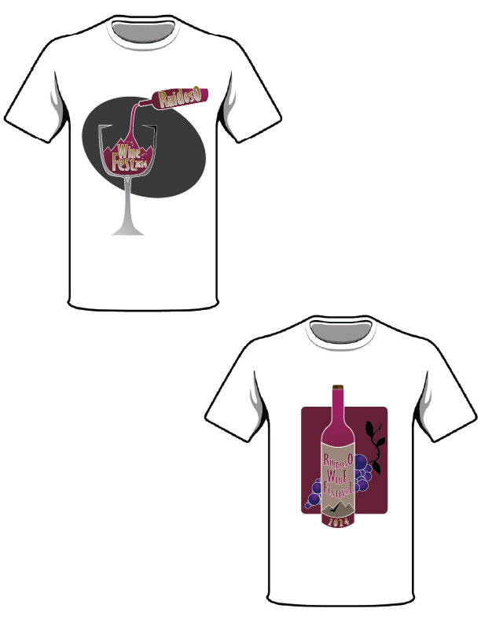

brew at the zoo flyers

Brew at the Zoo Flyer, made with Adobe InDesign
I created this local event advertisement for my InDesign class. I made three different ad designs for the same event, all of which follow the prinicples of design that I learned and applied to this project.
t-shirt mockups

Wine Festival T-Shirt Designs, made with Adobe Illustrator
For this project, I designed three different logos that would look good to put on a t-shirt. These specific were created with inspiration from a local wine festival.
summer camp logo
Summer Camp Logo, made with Adobe Illustrator
Out of the three logos I originally designed for a summer camp program, I thought this design worked the best because it represents a campfire. The hardest part about this project was creating the wood grain on the paw, but I feel like it was a valuable learning experience.
downloadable versions
click the links below to download a pdf version of all my projects! :)
Brew at the Zoo Event Flyers
Katmai National Park
Summer Camp Logo
Scream Movie Poster
T-Shirt Mockups